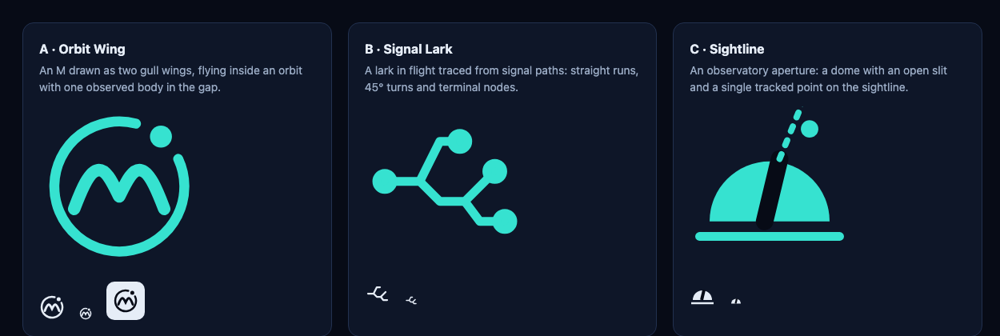

Brand board
The Orbit Wing: an M drawn as two wings in flight inside an orbit, with one observed body in the gap. The lark is the creator’s work; the orbit is Merlark keeping watch; the body is the thing worth a second look.
Symbol
Lockups
- Clear space at least the height of the body (the amber dot ×2) on every side.
- Keep the gap in the orbit; it is where the observed body lives.
- Never rotate, outline, add gradients to the strokes, or recolour the wings and orbit in different accents.
- On dark use the full-colour lockup: teal orbit, off-white wings and wordmark, amber body.
Colour
- Space 1
--space-1 #070b16Page background - Surface 1
--surface-1 #0d1528Cards - Surface 3
--surface-3 #16223dRaised controls - Line
--line-strong #2c3f63Edges - Signal teal
--accent #36e2d0Primary accent, orbit - Violet
--violet #a89bffHistorical estimate - Amber
--amber #ffb547Observed body, evidence - Text
--text #e6edf7Body text
Finding states: working ● slipping ● neutral ● emerging ● insufficient evidence ○. Text colours meet WCAG AA contrast on every surface.
Typography
System fonts only: no third-party font requests. The wordmark is drawn, not typeset, so it renders identically everywhere.
Spacing and shape
4 px base scale. Radii 8 / 12 / 18 px, pills for controls. Thin illuminated edges (1 px teal at 35%) mark focus and the main finding.
Motion
Motion explains state; it never decorates data. Everything stops under “reduce motion”.
Explorations
Three directions were drawn before choosing. Signal Lark read as a network diagram at small sizes; Sightline was legible but generic. Orbit Wing carries both the name and the product idea and survives at 16 px in one colour.
